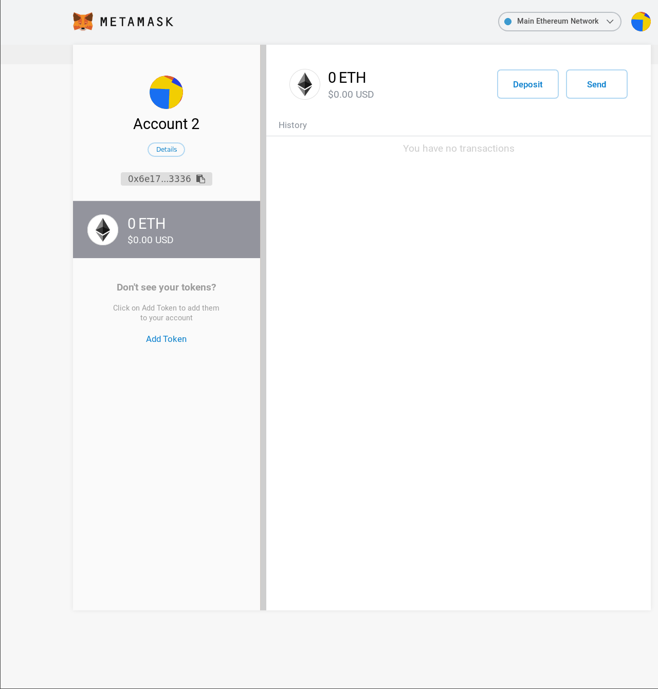

To use the Beta release of PassMe, you’ll need the MetaMask extension installed, an account and some ether on the Kovan Test Network.
There is also a video walkthrough of the process on YouTube
Install MetaMask for your browser.
When you installed the extension it should have opened a new tab, follow the instructions in that tab to create a new account for ethereum transactions.
Switch networks to the Kovan Test Network, as shown below

Access the Kovan Faucet, to redeem 1ETH for your account. This process requires a Github account, to authenticate you, and your newly created account's address, which will be copied to your clipboard when you click on your account's name at the top of the metamask extension
Visit the PassMe web application, when prompted for the ‘contract address’, insert the value below (begging with 0x), which is where the PassMe contract is deployed on the Kovan test network.
0xa2BeF77575CBc0a1580A792479e8AcA321870d57
Enter a master-password when prompted, this will be used to derive a secure key for encrypting your passwords. Your master password should be at least 12 characters long, and include a variety of letters, numbers and symbols. You should make your master password as random as possible (you can write it down on some paper if needed). Random passwords can be generated here
The first time you use PassMe, it will prompt you for an initial transaction. This is required to initialise your vault on the blockchain, please accept the transaction, otherwise you may encounter issues when attempting to interact with your stored passwords. After you've confirmed this, please reload the page and re-enter the contract address and your master password
After you've reloaded the page, and entered your master-password once more, you'll be met with the 'Retrieve a Password' screen, but at the moment there won't be anything saved to your vault, to add something click on the grey 'Save a pasword' navigation button, enter the site's URL and password and submit. After this you'll be prompted by Metamask to confirm the transaction. It may take a few seconds for the transaction to be validated and added to a block, so please be patient and wait until MetaMask indicates that the transaction has been confirmed.
After your password has been saved, you need to refresh your local vault by clicking the 'update vault' navigation button. Now you'll find you password once you search for it in the URL
input. The icons in the 'Actions' column are as follows:
Eye: toggle the visibility of the sites password
Bin: permanently delete this password, this is a transaction that will cost about the same as writing a new note.
Published: 2019-07-01